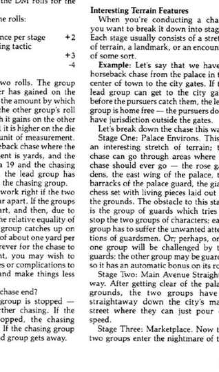

追逐 Chases
追逐是一个群体追上另一个群体，或多个群体争先抵达同一目标的情境。好的追逐需要快速而混乱的移动、有趣的地形或障碍、所有参与者面临的危险，以及对剧情的实际推动。若双方速度差距很大，可以直接描述追上或逃脱；速度接近时，应把追逐拆成一系列阶段。
先决定尺度：城市中的骑马追逐以码为单位，跨越城市或荒野的竞赛可用英里，短距离步行追逐则可用英尺。每个阶段双方各掷 1d20；每一段距离提供 +2，巧妙的拖延战术提供 +3，障碍造成 −4。点数较高的一方按差值拉开或缩短距离，每高 1 点便获得一个距离单位。
追逐在以下情况结束：一方被阻挡而无法继续；领先者抵达目标；追赶者追上并开始战斗或谈判；或领先者远到主持人判断已无法追上。阶段可以是宫殿花园、主街、市场、被倒下马车堵住的岔路和通往城门的直道。每两三个阶段安排一个障碍通常最合适。
追逐必须有绝望与危险。若反派逃脱会杀死人质，若角色被追上会被捕或杀死，双方才有充分理由冒险。设计时要回答：谁在绝望？谁处于危险？危险为何会随着追逐结果改变？

追逐表可记录开始、结束、特殊条件、特殊路线、捷径机会、被迫退出追逐的情况、危害／机会，以及时间或距离分隔轨迹。追逐矩阵的每个圆框代表一个阶段，方框中的箭头表示可行路线；同一结构也可以用来记录一个只画关键房间的微型地下城。